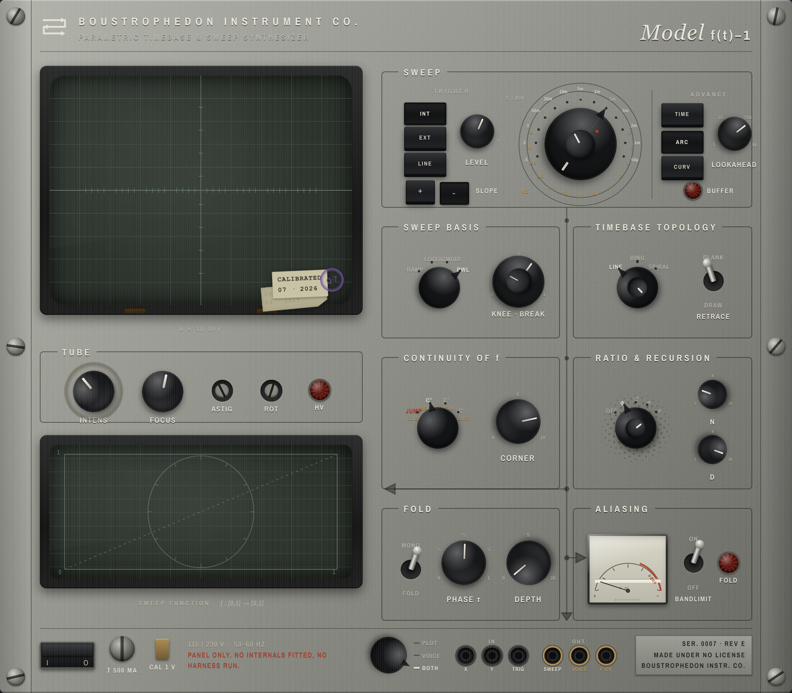

HEART / SURFACE STUDIES
BOUSTROPHEDON INSTRUMENT CO.
REFERENCE COLLECTION
11 SEPTEMBER 2026
01
Boustrophedon
02
Heart Monitor
03
Nagra IV-S
04
ARP 2600 M

Image unavailable · use source link
Enlarge ↗
Boustrophedon · canonical Rev E drawing
LOCAL RENDER
Model f(t)–1
Fit
Close